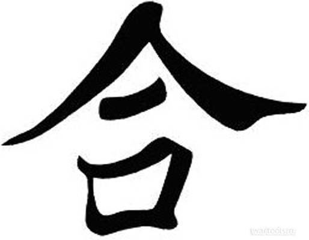
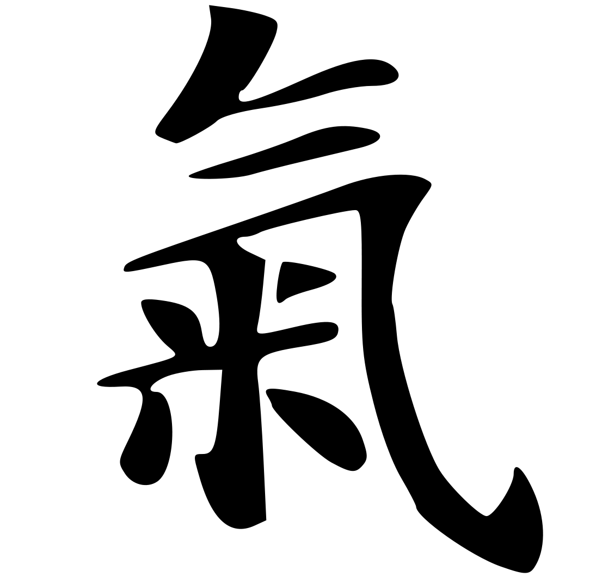
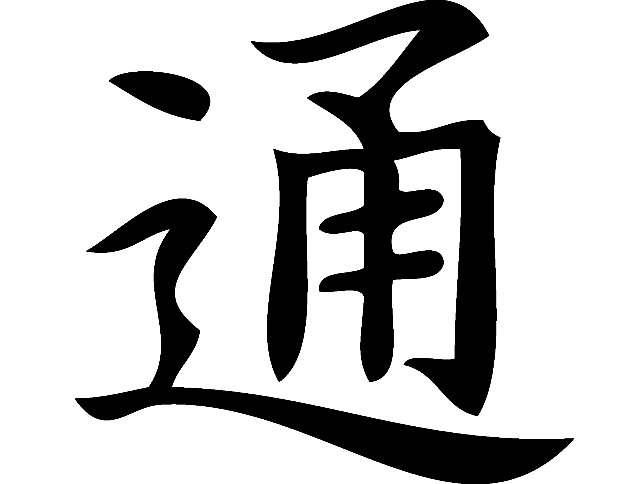

На самом деле слово "айкидо" состоит из трёх иероглифов, каждый из которых имеет собственное значение.
| Иероглиф | Написание | Значение |
| Ай |  | В переводе с японского означает "гармония" или "быть правильным". Основатель также имел в виду другой иероглиф со значением "любовь", который произносится так же, а пишется по-другому. |
| Ки |  | Переводится как "энергия духа", "жизненная энергия". В сочетании с предыдущим иероглифом образуют слово, означающее "стать единым с силой", однако Уэсиба подчёркивал, что вкладывает в них иной смысл. |
| До |  | Близко русскому слову "путь", однако несколько глубже: подразумевает не только дорогу, но и судьбу, жизненный путь, деяния человека. |
Таким образом, "айкидо" означает "путь к внутренней гармонии".
Философия айкидо основана на отрицании агрессии и стремлении к гармонии. Нападающий нарушает гармонию мира, давая выход своему боевому духу (бу) и стараясь причинить вред сопернику. Айкидока, в свою очередь, вместо того, чтобы приумножать агрессию и хаос, отвечает мягкостью, не нанося нападающему вреда, но убеждая его в бесполезности его действий. Айкидо предписывает избегать применения техники всегда, когда это возможно, и стараться не наносить атакующему травм. Использовать айкидо можно только для защиты себя, своих близких или того, кто слабее.